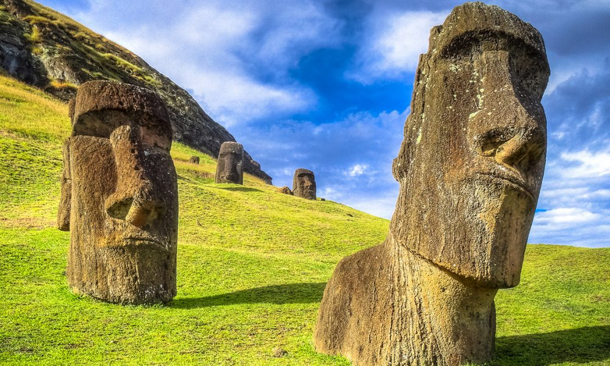
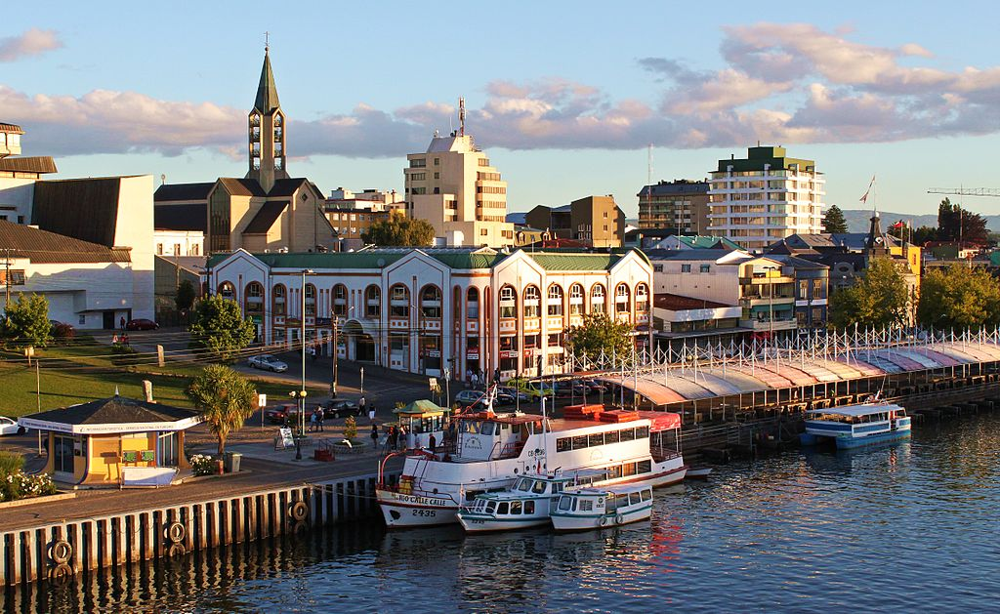
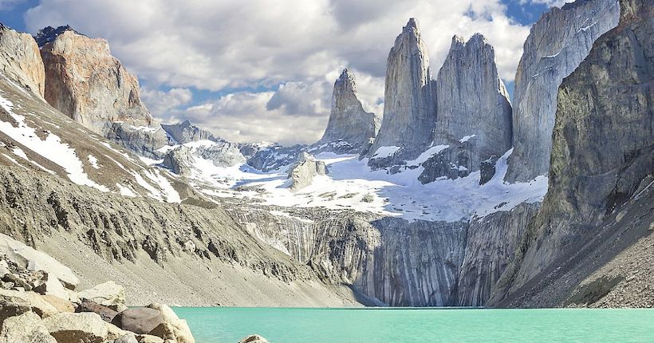

La remota isla volcánica ubicada en el Triángulo de la Polinesia corresponde administrativamente a la Región de Valparaíso. El ombligo del mundo tiene una sola ciudad, Hanga Roa, donde se encuentra el Museo Antropológico Padre Sebastián Englert, sobre los pueblos indígenas, y el Jardín Botánico Tau Kiani, con casi 3.000 plantas.
Uno de los lugares más interesantes podría ser Ahu Te Pito Kura, frente a la bahía de La Pérouse, donde hay un moai derribado. Sin embargo, junto a este, hay una gran piedra esférica llamada Te Pito O Te Henua (el ombligo del mundo) y al poner una brújula sobre ésta, girará en círculos sin poder apuntar ningún norte.
La playa más famosa de la isla es Anakena, conocida por su arena blanca y sus aguas turquesas. Allí se encuentran dos plataformas de Moais, aunque los más imponentes están en Ahu Tongariki, una plataforma de casi 220 metros conformada por 15 coloso de piedra.

Valdivia
Conocida por ser la ciudad más lluviosa de Chile, Valdivia está rodeada de áreas verdes, humedales y ríos, lo que la hacen un entorno natural privilegiado. Una manera de darse cuenta de esto es ir al Parque Oncol, que queda a sólo 28 kilómetros de la ciudad y donde se pueden ver diversas especies de helechos, anfibios y aves.
El 2016, la Unesco nombró la ciudad sureña como la Capital Mundial de la Cultura debido a su patrimonio.
La Feria Fluvial hace parte de este, uno de los mercados más pintorescos en una ubicación única cerca del puente Pedro de Valdivia que conecta el centro de la ciudad con la isla Teja.

Torres del Paine
El Parque Nacional Torres del Paine es uno de los destinos más populares para los turistas que viajan a Chile. Nombrado como la Octava Maravilla del Mundo y como el quinto lugar más hermoso del planeta, el parque además fue nombrado Reserva de la Biósfera por la Unesco en 1978.
Administrado por la Conaf, se considera que es uno de los lugares más prístinos de nuestro país. Debido a su paisaje exuberante y el avistamiento cotidiano de animales, es uno de los atractivos turísticos más populares actualmente, con diferentes alternativas.
Uno de los senderos más concurridos es el de la base de las torres, que dura alrededor de 8 horas ida y vuelta. Para una alternativa más relajada se puede recorrer en auto hasta el sendero que lleva al Mirador Cuernos, con hermosas vistas panorámicas.

Cavernas de Mármol
También conocidas como Catedral de Mármol o Capillas de Mármol, el santuario de la naturaleza es un conjunto de formaciones minerales de carbonato de calcio, que se ubican en el Lago General Carrera en la Región de Aysén. El contraste entre las imponentes formas rocosas con el agua turquesa y cristalina es un imperdible de nuestro país.
Consideradas un monumento nacional desde 1994 se formaron por la erosión del agua creando hermosas formaciones rocosas de colores y belleza encandilantes.
Son visitadas por turistas de todo el mundo y se sitúan a 223 km al sur de la capital regional, Coyhaique. Para acceder a ellas, debes subirte a unos pequeños botes en la localidad de Puerto Río Tranquilo, que permiten verlas de cerca y así apreciar sus colores y texturas.